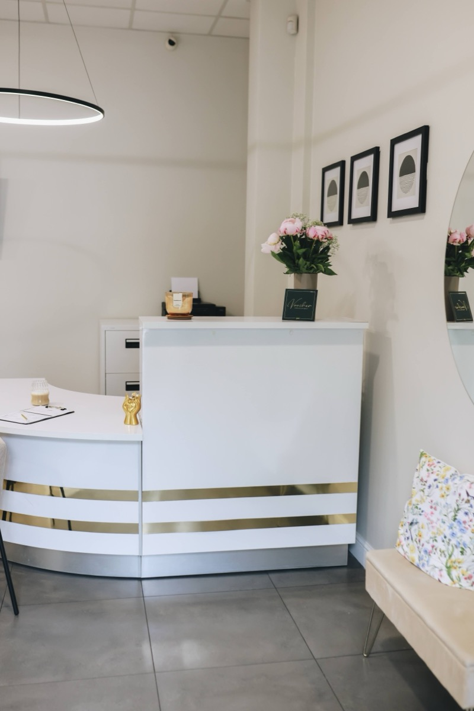
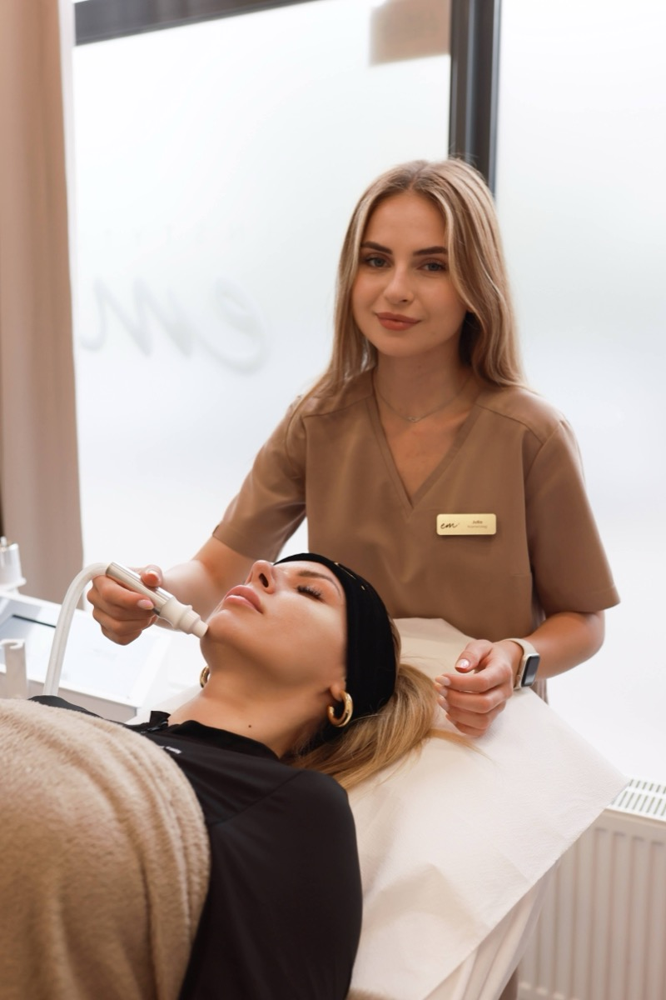

Salon INSTYTUTem.™
Miejsce zaprojektowane z myślą o Twoim komforcie i bezpieczeństwie.
Zanim umówisz pierwszą wizytę, zobacz, gdzie będziesz się czuć zaopiekowana — gabinety wyposażone w certyfikowany sprzęt medyczny, zaprojektowane tak, by każda minuta była komfortowa.

Wnętrze i Atmosfera
Zaprojektowane z troską o detale
Od pierwszego kroku w progu po fotel zabiegowy — każdy element wnętrza ma służyć Twojemu komfortowi i dyskrecji.


Sprzęt i Standard Medyczny
Certyfikowane technologie, nie przypadkowość
Pracujemy wyłącznie na oryginalnym, certyfikowanym sprzęcie medycznym — bez kosmetycznych zamienników.

Zespół, który wie, co robi
Każdy zabieg prowadzony przez certyfikowaną kosmetolożkę, nie asystentkę.